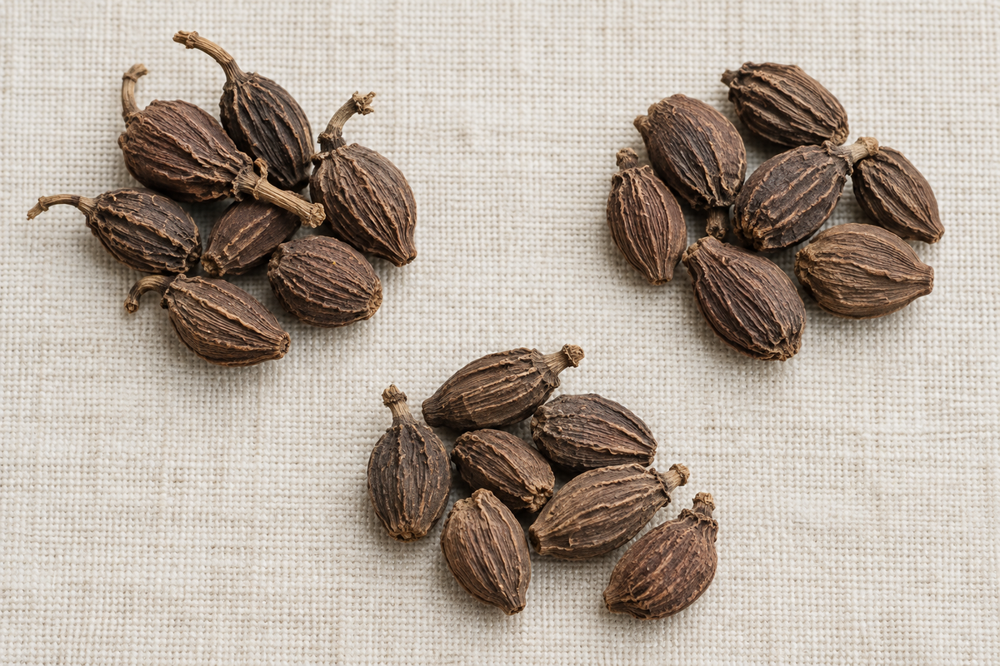

Grading on the Tarpaulin: How Pod Selection Really Happens
Caliber, tail length and color: what published Nepal research tells us—and what still requires observation on the farm.

The decision begins before the buyer arrives
Picture a seller facing a mixed lot of dried large cardamom. There are larger and smaller capsules, tails of different lengths, variations in color and perhaps pieces that need to be removed. The immediate question is practical: which differences will the buyer recognize, and is separating them worth the time and lost weight?
That is a useful scene to imagine, but it is not a scene this article observed. No consented farm visit, named grower, photographed tarpaulin or contemporaneous negotiation was supplied. What follows is an evidence-led account of reported practices and the decisions a sorter may face—not a claim to have watched a particular household. Large cardamom here means Amomum subulatum, Nepal’s kalo alaichi. [1]
First, distinguish farm sorting from trader grading
A study by Bhusal, Kattel and Dhakal surveyed 160 purposively selected farmers in Phungling, Taplejung, in March 2018. It reported grading at the farm level for 5 of the 160 households, about 3.1%, and described most grading and tail cutting as taking place further along the chain. This is a dated, local, non-random sample; it cannot establish the current rate across Nepal or what any particular farmer does. [1]
Nor does a low reported grading rate mean farmers have no knowledge of quality. It can reflect the price offered, scarce labor, market access, a preference to sell a mixed lot, or other constraints; the survey discusses laborious grading and lack of standard criteria and tools. Those explanations should be tested with the people making the decision, not assigned to all households. A regional trader who aggregates lots may face a different economic calculation from a grower selling a single bag. [1]
What the eye can assess: size, damage and color
Size is among the features reported in Nepali grade descriptions. Larger, fuller capsules can be separated from small or visibly damaged material by hand or by a sizing tool. But “large” is meaningful only when both parties agree on how it is measured: length or width, with or without the tail, and whether a sieve aperture or a caliper controls acceptance. Record cultivar and lot, because the physical starting material is not identical across all harvests.
Appearance also matters. Trade descriptions discuss a natural brownish or pinkish color and cleanliness, but the significance of smoke and color depends on the intended market and agreed specification. A dark capsule is not automatically contaminated or inferior; an attractive one is not automatically safe. Visible mold, insect damage, char and foreign matter are reasons to separate and assess a lot under the relevant food-safety procedure, not merely cosmetic flaws. Do not try to make moldy product acceptable by brushing it clean. [1, 2]
Color alone does not measure water content. A hand squeeze is not an instrument for water activity, and a photograph does not establish pesticide residues, PAHs or microbiological safety. Those require fit-for-purpose sampling and testing when the buyer’s safety plan or the law calls for it.
The tail: an easy feature to see, a difficult cost to ignore
The dried floral remnant at the end of the capsule—the trade “tail”—is one criterion buyers may inspect. The 2018 Phungling survey describes tail cutting with simple scissors, often carried out by women and paid according to processed volume or weight at the regional level. That is the study’s account, not a claim that the same allocation applies to every household. [1]
Cutting can consume time and reduce the mass weighed for sale. An unnecessarily deep cut can damage the capsule or release seeds; a long tail can fall outside a buyer’s specification. Agree on acceptable trimming, handling hygiene and payment basis before the work begins. Weigh the lot immediately before and after trimming, keep the removed material separate and record whether the buyer pays for gross or net product.
If labor is performed by family members, record the hours even when no wage changes hands. The return to sorting is not the higher grade price alone; it is the difference in total proceeds after accounting for lost saleable mass, labor, transport, packaging and any change in the price paid for the remaining fraction.
Names travel; definitions do not always travel with them
Regional descriptions commonly use Jumbo Jet (JJ), Standard or Super Deluxe (SD), and Chalan Chalti (CC). These labels are useful for a conversation but are not self-executing measurements. The Phungling survey reproduces a 2016 trade table emphasizing relative size, trimmed tails, natural color and moisture. A Nepal Trade and Export Promotion Centre logistics report describes categories using size bands; its middle-grade description does not match all other published tables. Treat these as historical descriptions, not a single binding present-day standard. [1, 2]
Before sorting, ask the actual buyer for a written current specification: measurement method and cutoffs, allowable defects and tails, moisture basis and test, accepted cleaning, packaging, price for each grade, deductions, and how disputes are resolved. Ask whether separation is checked by sampling or by the whole lot. A trade label without an agreed specification can turn a day’s work into an argument at the weighing scale.
| Parameter / Step | Unsorted (Mixed Base) | Sorted Lot (Selective Trimming) |
|---|---|---|
| Total batch mass | 40.0 kg mixed | 12.0 kg premium + 28.0 kg base |
| Assumed price structure | Base price: P | Premium: P + NPR 50/kg; Base: P |
| Incremental gross proceeds | NPR 0 | 12 kg × NPR 50 = NPR 600 |
| Incremental labor & handling | NPR 0 | 1.5 h × NPR 200/h + NPR 100 = NPR 400 |
| Illustrative net margin | Baseline | + NPR 200 for the lot |
| Break-even premium threshold | — | NPR 33.33 / kg on premium portion |
A defensible observation protocol
To turn this desk account into the reported piece promised by its title, obtain permission from a grower and any workers, document the place and harvest date, and ask which tasks may be photographed. Record the original lot weight, drying method if known, separate grade weights, tools, number of workers, start and end times, and a timed estimate of actual work. Note the farmer’s own category names and reasons without replacing them with trader terminology.
With consent, accompany the lot to a buyer or record an actual offer: mixed versus sorted, accepted grades, deductions, weighing basis and payment date. Photograph the same examples beside a scale or ruler with the owner’s permission, but do not present images as proof of hidden chemical or microbiological quality. Report disagreement between seller and buyer. Without this evidence, the calculation above remains a decision aid, not a claim about income.
The value of a clear question
The tarpaulin is not merely a backdrop for a beautiful product. It can be a workplace where someone chooses whether the next hour should be spent separating capsules, carrying fuel or moving the harvest to market. The question that respects that work is not whether sorting sounds like value addition. It is who pays for the extra work, how the result is judged and whether the seller receives enough of the difference.
Sources and further reading
- Bhusal, Kattel and Dhakal. “Value Chain Analysis of Large Cardamom in Taplejung District of Nepal.” Environmental Science & Sustainable Development, 2020; fieldwork March 2018. press.ierek.com/ESSD/756
- Nepal Trade and Export Promotion Centre (TEPC). “Logistics Study on Large Cardamom: Value Addition and Export Performance.” tepc.gov.np